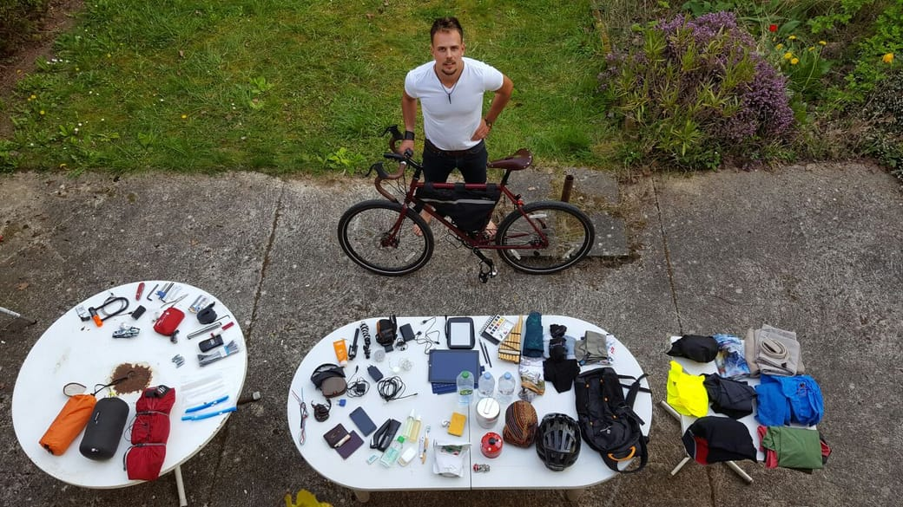
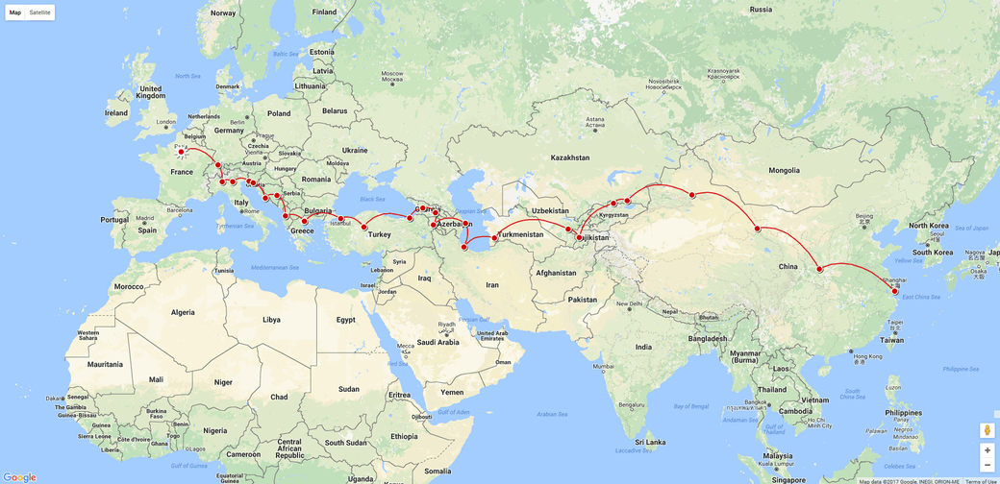

<div>On the 11th of April 2017, I departed from Paris. Here&#8217;s my stops until now :</div>
<p></p>
<div class="non-floater" style="height: 480px;"><iframe style="width: 100%; height: 100%; padding: 0; border: 0;" src="https://www.google.com/maps/d/embed?mid=1P2eXzazAt64dJazL2WdbvqJl4i8" width="300" height="150" loading="lazy"></iframe></div>
<h2></h2>
<div class="row"> <div class="col-md-6">
<h6 style="text-align: center;"><a href="/gear-to-cycle-the-world/">Click here to see my full list of equipement</a></h6>
<p style="text-align: center;"><a href="/gear-to-cycle-the-world/"></a></p>
</div><div class="col-md-6">
<h6 style="text-align: center;"><a href="/trip/travel-itinerary/">Click here to learn more about my itinerary</a></h6>
<p style="text-align: center;"><a href="/trip/travel-itinerary/"></a></p>
</div></div>
